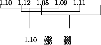

in-place-sort so that its result is the modified
vector. This section introduces several small projects on programming with mutable structures. The ordering of the subsections roughly matches the outline of the book, proceeding from simple classes of data to complicated ones and from structural recursion to generative recursion with backtracking and accumulators.
Programming with mutable vectors is hardly ever needed in the kinds of programs that we encountered. Still, because it is far more prevalent in conventional languages, it is an important skill and deserves more practice than section 41.2 suggests. This section covers sorting with vectors, but its goal is to practice reasoning about intervals when processing vectors.
We encountered the idea of sorting as early as section 12.2,
where we designed the sort function. It consumes a list of numbers
and produces a list of numbers with the same items in sorted (ascending or
descending) order. An analogous function for vectors consumes a vector and
produces a new vector. But, using vector mutation, we can also design a
function that changes the vector so that it contains the same items as
before, in a sorted order. Such a function is called an IN-PLACE SORT
because it leaves all the items inside the existing vector.
An in-place-sort function relies exclusively on effects on its input vector to accomplish its task:
;;in-place-sort : (vectorof number) -> void;; effect: to modifyVsuch that it contains the same items ;; as before but in ascending order (define (in-place-sort V) ...)
Examples must demonstrate the effect:
(local ((define v1 (vector 7 3 0 4 1))) (begin (in-place-sort v1) (equal? v1 (vector 0 1 3 4 7))))
Of course, given that in-place-sort consumes a vector, the true
problem is to design the auxiliary function that works on specific
segments of the vector.
The standard template for a vector-processing function uses an auxiliary function:
(define (in-place-sort V) (local ((define (sort-aux V i) (cond [(zero? i) ...] [else ... (vector-ref V (sub1 i)) ... ... (sort-aux V (sub1 i)) ...]))) (sort-aux V (vector-length V))))
Following the design ideas of intermezzo 5, the auxiliary function consumes
a natural number and uses it as an index into the vector. Because the
initial argument is (vector-length V), the accessible index is
always (sub1 i).
Recall that the key to designing functions such as sort-aux is to
formulate a rigorous purpose and/or effect statement. The statement must
clarify on which interval of the possible vector indices the function works
and what exactly it accomplishes. One natural effect statement follows:
;;sort-aux : (vectorof number) N -> void;; effect: to sort the interval [0,i) ofVin place (define (sort-aux V i) ...)
To understand this effect statement in the larger context, let's adapt our original example:
(local ((define v1 (vector 7 3 0 4 1))) (begin (sort-aux v1 5) (equal? v1 (vector 0 1 3 4 7))))
If sort-aux is applied to a vector's length, it should sort the entire
vector. This statement implies that if the first argument is less than the
vector's length only some initial segment of the vector is sorted:
(local ((define v1 (vector 7 3 0 4 1))) (begin (sort-aux v1 4) (equal? v1 (vector 0 3 4 7 1))))
In this particular example, the last number remains in its original place, and only the first four vector items are sorted.
Now we can analyze each case in the template of sort-aux:
If i is 0, the interval of the effect statement is
[0,0). This means that the interval is empty and that the
function has nothing to do.
The second clause in the template contains two expressions:
(vector-ref V (sub1 i)) and (sort-aux V (sub1 i))
The first reminds us that we can use the i - 1-st field of V; the
second one reminds us of the natural recursion. In this case, the natural
recursion sorts the interval [0,(sub1 i)). To finish the
task, we must insert the value of the i - 1-st field into its proper place in
the interval [0,i).
The above examples make this case concrete. When we evaluate (sort-aux
v1 4), the number in the last field of v1 remains at its place. The
first four items in the vectors are: 0, 3, 4, and
7. To sort the entire interval [0,5), we must insert
1, which is (vector-ref V (sub1 5)), between 0 and
3.
In short, the design of in-place-sort follows the same pattern as
that of the function sort in section 12.2 up to this
point. For sort, we also designed the main function only to find
out that we needed to design an auxiliary function for inserting one more
item into its proper place.
Figure 126 gathers what we have discussed about
in-place-sort so far. It also includes a specification of
insert, the second auxiliary function. To understand its effect
statement, we reformulate the example for the second clause of
sort-aux:
(local ((define v1 (vector 0 3 4 7 1))) (begin (insert 4 v1) (equal? v1 (vector 0 1 3 4 7))))
In this case, insert moves 1 over three numbers: first
7, then 4, and finally 3. It stops when the next
number in the leftwards direction, that is, 0, is smaller than the
number that is being inserted.
Let's look at a second example for insert:
(local ((define v1 (vector 7 3 0 4 1))) (begin (insert 1 v1) (equal? v1 (vector 3 7 0 4 1))))
Here the problem is to insert 3 into a segment that contains only
one number: 7. This means that insert must swap the values in the
first two fields and must stop then, because 3 can't move any
further to the left.
|
Now take a look at the template for insert:
(define (insert i V) (cond [(zero? i) ...] [else ... (vector-ref V (sub1 i)) ... ... (insert (sub1 i) V) ... ]))
It is the standard template for a vector-processing auxiliary function. As usual we distinguish two cases:
If i is 0, the goal is to insert
(vector-ref V 0) into the segment [0,0]. Since
this interval contains only one number, insert has accomplished
its task.
If i is positive, the template implies that we may consider
another item in V, namely (vector-ref V (sub1 i)), and that
we can perform a natural recursion. The immediate question is whether
(vector-ref V (sub1 i)) is smaller or larger than (vector-ref
V i), the item that is to be moved around. If so, V is sorted on the
entire interval [0,i], because V is sorted
on [0,i) by assumption. If not, the item at i is
out of order still.
The cond-expression that employs the necessary conditions is
(cond [(> (vector-ref V (sub1 i)) (vector-ref V i)) ...] [(<= (vector-ref V (sub1 i)) (vector-ref V i)) (void)])
The second clause contains (void) because there is nothing left to do. In
the first clause, insert must -- at a minimum -- swap the values in the
two fields. That is, insert must place (vector-ref V i) into
field (sub1 i) and (vector-ref V (sub1 i)) into
field i. But even that may not be enough. After all, the value in the
i-th field may have to wander over several fields as the first example
demonstrated. Fortunately, we can easily solve this problem with the natural
recursion, which inserts the (vector-ref V (sub1 i)) into its proper
place in [0,(sub1 i)] after the swapping has taken place.
Figure 127 contains the complete definition of
insert and swap. This second function is responsible for
swapping the value of two fields.
Exercise 43.1.1.
Test the auxiliary functions for in-place-sort from
figures 126 and 127.
Formulate the tests as boolean-valued expressions.
Develop and test more examples for in-place-sort.
Integrate the pieces. Test the integrated function. Eliminate superflous
arguments from the auxiliary programs in the integrated definition, step by
step, testing the complete function after each step. Finally, change
in-place-sort so that its result is the modified
vector.  Solution
Solution
|
Exercise 43.1.2.
The insert function of figure 127 performs two
vector mutations for each time the function recurs. Each of these mutations
pushes (vector-ref V i), for the original value of i, to the
left in V until its proper place is found.
Figure 128 illustrates a slightly better solution. The
situation in the top row assumes that the values a, b,
and c are properly arranged, that is,
(< a b ... c)
holds. Furthermore, d is to be inserted and its place is between
a and b, that is,
(< a d b)
holds, too. The solution is to compare d with all the items in
k + 1 through i and to shift the items to the right if they are larger
than d. Eventually, we find a (or the left end of the
vector) and have a ``hole'' in the vector, where d must be
inserted. (The hole actually contains b.) This situation is
illustrated in the middle row. The last one shows how d is placed
between a and b.
Develop a function insert that implements its desired effect
according to this description. Hint: The new function must consume d
as an additional argument.  Solution
Solution
Exercise 43.1.3.
For many other programs, we could swap the order of the subexpressions in
begin-expressions and still get a working program. Let's consider this idea for
sort-aux:
;; sort2-aux : (vectorof number) N -> void
(define (sort2-aux V i)
(cond
[(zero? i) (void)]
[else (begin
(insert2 (sub1 i) V)
(sort2-aux V (sub1 i)))]))
The order implies that sort2-aux first inserts the item from
(sub1 i) into some already sorted part of V and then
sorts the remainder of V. Here is a picture that illustrates the
situation graphically:
i-1 a left right
The depicted vector consists of three pieces: a, the item in
field (sub1 i), the left fragment, and the right fragment. The
questions are which of the two fragments is sorted and into which fragment
a should be inserted.
Considering that sort2-aux decreases its first argument and thus
sweeps over the vector from right to left, the answers are that the right
fragment is initially empty and thus sorted in ascending order by default;
the left fragment is still unordered; and a must be inserted into
its proper place in the right fragment.
Develop a precise effect statement for sort-aux based on these
observations. Then develop the function insert2 so that
sort2-aux sorts vectors properly.  Solution
Solution
In section 25.2, we got to know qsort, a function
based on generative recursion. Given a list, qsort constructs
a sorted version in three steps:
choose an item from the list, call it pivot;
create two sublists: one with all those items strictly smaller than
pivot, another one with all those items strictly larger than
pivot;
sort each of the two sublists, using the same steps, and then append the two lists with the pivot item in the middle.
It isn't difficult to see why the result is sorted, why it contains all the items from the original list, and why the process stops. After all, at every stage, the function removes at least one item from the list so that the two sublists are shorter than the given one; eventually the list must be empty.
| |||||||||||||||||||||||||||
Figure 129 illustrates how this idea can be adapted for an
in-place version that works on vectors. At each stage, the algorithm works
on a specific fragment of the vector. It picks the first item as the
pivot item and rearranges the fragment so that all items smaller
than the pivot appear to the left of pivot and all items larger
than pivot appear to its right. Then qsort is used
twice: once for the fragment between left1 and right1 and
again for the fragment between left2 and right2. Because
each of these two intervals is shorter than the originally given interval,
qsort eventually encounters the empty interval and
stops. After qsort has sorted each fragment, there is nothing
left to do; the partitioning process has arranged the vector into fragments of
ascending order.
Here is the definition of qsort, an in-place sorting algorithm for
vectors:
;;qsort : (vectorof number) -> (vectorof number);; effect: to modifyVsuch that it contains the same items as before, ;; in ascending order (define (qsort V) (qsort-aux V 0 (sub1 (vector-length V)))) ;;qsort-aux : (vectorof number) N N -> (vectorof number);; effect: sort the interval [left,right] of vectorV;; generative recursion (define (qsort-aux V left right) (cond [(>= left right) V] [else (local ((define new-pivot-position (partition V left right))) (begin (qsort-aux V left (sub1 new-pivot-position)) (qsort-aux V (add1 new-pivot-position) right)))]))
The main function's input is a vector, so it uses an auxiliary function to
do its job. As suggested above, the auxiliary function consumes the vector
and two boundaries. Each boundary is an index into the vector. Initially,
the boundaries are 0 and (sub1 (vector-length V)), which
means that qsort-aux is to sort the entire vector.
The definition of qsort-aux closely follows the algoritm's
description. If left and right describe a boundary of
size 1 or less, its task is done. Otherwise, it partitions the
vector. Because the partitioning step is a separate complex process, it
requires a separate function. It must have both an effect and a result
proper, the new index for the pivot item, which is now at its proper
place. Given this index, qsort-aux continues to sort V on
the intervals [left,(sub1 new-pivot-position)] and
[(add1 new-pivot-position), right]. Both intervals are at
least one item shorter than the original, which is the termination argument
for qsort-aux.
Naturally, the key problem here is the partitioning step, which is
implemented by partition:
;;partition : (vectorof number) N N -> N;; to determine the proper positionpof the pivot-item ;; effect: rearrange the vectorVso that ;; -- all items inVin [left,p) are smaller than the pivot item ;; -- all items ofVin (p,right] are larger than the pivot item (define (partition V left right) ...)
For simplicity, we choose the left-most item in the given interval as the
pivot item. The question is how partition can accomplish its task, for
example, whether it is a function based on structural recursion or whether
it is based on generative recursion. Furthermore, if it is based on
generative recursion, the question is what the generative step
accomplishes.
| |||||||||||||||||||||||||||||||||||||||||||||||
The best strategy is to consider an example and to see how the partitioning step could be accomplished. The first example is a small vector with six numbers:
(vector 1.1 0.75 1.9 0.35 0.58 2.2)
The pivot's position is 0; the pivot item is 1.1. The
boundaries are 0 and 5. One item, 1.9, is
obviously out of place. If we swap it with 0.58, then the vector
is almost perfectly partitioned:
(vector 1.1 0.75 0.58 0.35 1.9 2.2)
In this modified vector, the only item out of place is the pivot item itself.
Figure 130 illustrates the swapping process that we just
described. First, we must find two items to swap. To do that, we search
V for the first item to the right of left that is larger than
the pivot item. Analogously, we search V for the first item to the
left of right that is smaller than the pivot item. These searches
yield two indices: new-left and new-right. Second, we swap
the items in fields new-left and new-right. The result is
that the item at new-left is now smaller than the pivot item and the
one at new-right is larger. Finally, we can continue the swapping
process with the new, smaller interval. When the first step yields values for
new-left and new-right that are out of order, as in the
bottom row of figure 130, then we have a mostly partitioned
vector (fragment).
Working through this first example suggests that partition is an
algorithm, that is, a function based on generative recursion. Following our
recipe, we must ask and answer four questions:
What is a trivially solvable problem?
What is a corresponding solution?
How do we generate new problems that are more easily solvable than the original problem? Is there one new problem that we generate or are there several?
Is the solution of the given problem the same as the solution of (one of) the new problems? Or, do we need to perform an additional computation to combine these solutions before we have a final solution? And, if so, do we need anything from the original problem data?
The example addressed issues 1, 3, and 4. The first step is to determine
the new-left and new-right indices. If new-left
is smaller than new-right, the generative work is to swap items in
the two fields. Then the process recurs with the two new boundaries. If
new-left is larger than new-right, the partitioning
process is finished except for the placement of the pivot item; placing the
pivot item answers question 2. Assuming we can solve this ``trivially
solvable'' problem, we also know that the overall problem is solved.
Let's study question 2 with some examples. We stopped working on the first example when the vector had been changed to
(vector 1.1 0.75 0.58 0.35 1.9 2.2)
and the interval had been narrowed down to [2,4]. The
search for new-left and new-right now yields 4
and 3, respectively. That is,
(<= new-right new-left)
holds. Switching the item in field new-right with the original
left-most boundary places the pivot item in the proper spot:
(vector 0.35 0.75 0.58 1.1 1.9 2.2)
because new-right points to the right-most item in the vector that
is smaller than the pivot item.
Before we accept this seemingly simple solution, let's check it with some additional examples, especially vector fragments where the pivot item is the largest or smallest item. Here is one such example:
(vector 1.1 0.1 0.5 0.4)
Assuming the initial interval is [0,3], the pivot item is
1.1. Thus, all other items in the vector are smaller than the
pivot item, which means that it should end up in the right-most position.
Our process clearly yields 3 for new-right. After all,
0.4 is smaller than pivot. The search for new-left,
though, works differently. Since none of the items in the vector is larger
than the pivot item, it eventually generates 3 as an index, which
is the largest legal index for this vector. At this point the search must
stop. Fortunately, new-left and new-right are equal at
this point, which implies that the partitioning process can stop and
means that we can still swap the pivot item with the one in field
new-right. If we do that, we get a perfectly well-partitioned
vector:
(vector 0.4 0.1 0.5 0.4 1.1)
The third sample vector's items are all larger than the pivot item:
(vector 1.1 1.2 3.3 2.4)
In this case, the search for new-left and new-right must
discover that the pivot item is already in the proper spot. And indeed, it
does. The search for new-left ends at field 1, which is the first
field that contains an item larger than the pivot item. The search for
new-right ends with 0, because it is the smallest legal
index and the search must stop there. As a result, new-right once
again points to that field in the vector that must contain the pivot item
for the vector (fragment) to be properly partitioned.
In short, the examples suggest several things:
The termination condition for partition is (<=
new-right new-left).
The value of new-right is the final position of the pivot
item, which is in the original left-most point of the interval of interest.
It is always acceptable to swap the contents of the two fields.
The search for new-right starts at the right-most boundary
and continues until it either finds an item that is smaller than the pivot
item or until it hits the left-most boundary.
Dually, the search for new-left starts at the left-most
boundary and continues until it either finds an item that is larger than
the pivot item or until it hits the right-most boundary.
And, the two searches are complex tasks that deserve their own function.
We can now gradually translate our discussion into Scheme. First, the
partitioning process is a function of not just the vector and some
interval, but also of the original left-most position of the vector and its
content. This suggests the use of locally defined functions and
variables:
(define (partition V left right) (local ((define pivot-position left) (define the-pivot (vector-ref V left)) (define (partition-aux left right) ...)) (partition-aux left right)))
The alternative is to use an auxiliary function that consumes the pivot's original position in addition to the vector and the current interval.
Second, the auxiliary function consumes an interval's boundaries. It
immediately generates a new pair of indices from these boundaries:
new-left and new-right. As mentioned, the searches for the
two new boundaries are complex tasks and deserve their own functions:
;;find-new-right : (vectorof number) number N N [>= left] -> N;; to determine an indexibetweenleftandright(inclusive) ;; such that(< (vector-ref V i) the-pivot)holds (define (find-new-right V the-pivot left right) ...) ;;find-new-left : (vectorof number) number N N [>= left] -> N;; to determine an indexibetweenleftandright(inclusive) ;; such that(> (vector-ref V i) the-pivot)holds (define (find-new-left V the-pivot left right) ...)
Using these two functions, partition-aux can generate the new
boundaries:
(define (partition V left right) (local ((define pivot-position left) (define the-pivot (vector-ref V left)) (define (partition-aux left right) (local ((define new-right (find-new-right V the-pivot left right)) (define new-left (find-new-left V the-pivot left right))) ... ))) (partition-aux left right)))
From here the rest of the definition is a plain transliteration of our discussion into Scheme.
|
Figure 131 contains the complete definition of
partition, partition-aux, and find-new-right; the
function swap is defined in figure 127. The
definition of the search function uses an unusual structural recursion based on
subclasses of natural numbers whose limits are parameters of the
function. Because the search functions are based on a rarely used design
recipe, it is best to design them separately. Still, they are useful only in
the context of partition, which means that they should be integrated
into its definition when their design is completed.
Exercise 43.1.4.
Complete the definition of find-new-left. The two definitions have
the same structure; develop the common abstraction.
Use the definitions of find-new-right and find-new-left
to provide a termination argument for partition-aux.
Use the examples to develop tests for partition. Recall that the
function computes the proper place for the pivot item and rearranges a
fragment of the vector. Formulate the tests as boolean-valued expressions.
When the functions are properly tested, integrate find-new-right
and find-new-left into partition and eliminate
superfluous parameters.
Finally, test qsort and produce a single function definition for
the in-place quick-sort algorithm.  Solution
Solution
Exercise 43.1.5.
Develop the function vector-reverse!. It inverts the contents of a
vector; its result is the modified vector.
Hint: Swap items from both ends until there are no more items to
swap.  Solution
Solution
Exercise 43.1.6. Economists, meteorologists, and many others consistently measure various things and obtain time series. All of them need to understand the idea of ``n-item averages'' or ``smoothing.'' Suppose we have weekly prices for some basket of groceries:
|
|  |
Develop the function list-3-average, which computes the 3-item
sliding averages of a list of numbers. That is, we represent a series of
grocery prices with lists, and list-3-averages consumes a list
such as
(list 1.10 1.12 1.08 1.09 1.11)
and produces
(list 1.10 329/300 82/75)
in return.
Develop the function vector-3-averages, which computes the 3-item
sliding averages of a vector of numbers. Since vectors are mutable, this
gives us the alternative of producing a new vector or mutating the existing
one.
Develop both versions of the function: one that produces a new vector and another one that mutates the vector it is handed.
Warning: This is a difficult exercise. Compare all three versions
and the complexity of designing them.  Solution
Solution
Exercise 43.1.7.
All the examples in this section deal with vector fragments, that is,
intervals of natural numbers. Processing an interval requires a starting
point for an interval, an end point, and, as the definitions of
find-new-right and find-new-left show, a direction of
traversal. In addition, processing means applying some function to each
point in the interval.
Here is a function for processing intervals:
;;for-interval : N (N -> N) (N -> N) (N -> X) -> X;; to evaluate(action i (vector-ref V i))fori,(step i), ... ;; until(end? i)holds (inclusive) ;; generative recursion:stepgenerates new value,end?detects end ;; termination is not guaranteed (define (for-interval i end? step action) (cond [(end? i) (action i)] [else (begin (action i) (for-interval (step i) end? step action)])))
It consumes a starting index, called i, a function for determining
whether the end of the interval has been reached, a function that generates
the next index, and a function that is applied to each point in between.
Assuming (end? (step (step ... (step i) ...))) holds,
for-interval satisfies the following equation:
(for-interval i end? step action) = (begin (action i) (action (step i)) ... (action (step (step ... (step i) ...))))
Compare the function definition and the equation with those for
map.
With for-interval we can develop (some) functions on vectors without
the traditional detour through an auxiliary function. Instead, we use
for-interval the way we used map for processing each item on
a list. Here is a function that adds 1 to each vector field:
;;increment-vec-rl : (vector number) -> void;; effect: to increment each item in V by1(define (increment-vec-rl V) (for-interval (sub1 (vector-length V)) zero? sub1 (lambda (i) (vector-set! V i (+ (vector-ref V i) 1)))))
It processes the interval [0,(sub1 (vector-length V))],
where the left boundary is determined by zero?, the termination
test. The starting point, however, is (sub1 (vector-length V)),
which is the right-most legal vector index. The third argument to
for-interval, sub1, determines the traversal direction,
which is from right to left, until the index is 0. Finally, the
action is to mutate the contents of the i-th field by adding
1.
Here is a function with the same visible effect on vectors but a different processing order:
;;increment-vec-lr : (vector number) -> void;; effect: to increment each item in V by1(define (increment-vec-lr V) (for-interval 0 (lambda (i) (= (sub1 (vector-length V)) i)) add1 (lambda (i) (vector-set! V i (+ (vector-ref V i) 1)))))
Its starting point is 0 and the end point is the right-most legal
index of V. The add1 function determines that the vector
is processed from left to right.
Develop the following functions, using for-interval:
rotate-left, which moves all items in vector into the
adjacent field to the left, except for the first item, which moves to the
last field;
insert-i-j, which moves all items between two indices
i and j to the right, except for the right-most one, which
gets inserted into the i-th field
(cmp. figure 128);
vector-reverse!, which swaps the left half of a vector with
its right half;
find-new-right, that is, an alternative to the definition in
figure 131;
vector-sum!, which computes the sum of the numbers in a vector
using set! (Hint: see section 37.3).
The last two tasks show that for-interval is useful for
computations that have no visible effects. Of course,
exercise 29.3 shows that there is no need for a clumsy
formulation such as vector-sum!.
Which of these functions can be defined in terms of vec-for-all
from exercise 41.2.17?
Looping Constructs: Many programming languages
(must) provide
functions like for-interval as built-in constructs, and force
programmers to use them for processing vectors. As a result, many more
programs than necessary use set! and require complex temporal
reasoning.  Solution
Solution
Many objects in our world are related to each other in a circular manner. We have parents; our parents have children. A computer may connect to another computer, which in turn may connect to the first. And we have seen data definitions that refer to each other.
Since data represents information about real-world objects, we will encounter situations that call for the design of a class of structures with a circular relationship. In the past, we have skirted the issue, or we used a trick to represent such collections. The trick is to use an indirection. For example, in section 28.1, we associated each structure with a symbol, kept a table of symbols and structures around, and placed symbols into structures. Then, when we needed to find out whether some structure refers to another, we extracted the relevant symbol and looked in the table to find the structure for the symbol. While this use of indirection allows us to represent structures with mutual references or structures in a cyclic relationship, it also leads to awkward data representations and programs. This section demonstrates that we can simplify the representation of collections with structure mutation.
To make this idea concrete, we discuss two examples: family trees and simple graphs. Consider the case of family trees. Thus far, we have used two kinds of family trees to record family relationships. The first is the ancestor tree; it relates people to their parents, grandparents, and so on. The second is the descendant tree; it relates people to their children, grandchildren, and so on. In other words, we have avoided the step of combining the two family trees into one, the way it is done in the real world. The reason for skirting the joint representation is also clear. Translated into our data language, a joint tree requires that a structure for a father should contain the structures for his children, and each of the child structures should contain the father structure. In the past, we couldn't create such collections of structures. With structure mutations, we can now create them.
Here is structure definition that makes this discussion concrete:
(define-struct person (name social father mother children))
The goal is to create family trees that consist of person
structures. A person structure has five fields. The content of each is
specified by the following data definition:
An family-tree-node (short: ftn) is either
false or
a person.
A person is a structure:
(make-person n s f m c) n is a symbol, s is number, f and
m are ftns, and c is a (listof person).
As usual, the false in the definition of family
tree nodes represents missing information about a portion of the family
tree.
Using make-person alone, we cannot establish the mutual reference
between a family tree node for a father and his child. Suppose we follow an
ancestral tree strategy, that is, we create the structure for the father
first. Then we can't add any child to the children field, because, by
assumption, the corresponding structure doesn't exist yet. Conversely, if we
follow a descendant tree strategy, we first create a structure for all of a
father's children, but those structures can't contain any information about the
father yet.
|
What this suggests is that a simple constructor for this kind of data isn't
really enough. Instead, we should define a GENERALIZED CONSTRUCTOR
that not only creates a person structure but also initializes it
properly when possible. To develop this function, it is best to follow the
real world, where upon the birth of a child, we create a new entry in the
family tree, record the child's parents, and record in the existing parents'
entries that they have a newborn. Here is the specification for just such a
function:
;;add-child! : symbol number person person -> person;; to construct apersonstructure for a newborn ;; effect: to add the new structure to the children offatherandmother(define (add-child! name soc-sec father mother) ...)
Its task is to create a new structure for a newborn child and to add the structure to an existing family tree. The function consumes the child's name, social security number, and the structures representing the father and the mother.
The first step of the design of add-child! is to create the new
structure for the child:
(define (add-child! name soc-sec father mother) (local ((define the-child (make-person name soc-sec father mother empty))) ...))
This covers the first part of the contract. By naming the structure in a local-expression we can mutate it in the body of the expression.
The second step of the design of add-child! is to add a body to
the local-expression that performs the desired effects:
(define (add-child! name soc-sec father mother) (local ((define the-child (make-person name soc-sec father mother empty))) (begin (set-person-children! father (cons the-child (person-children father))) (set-person-children! mother (cons the-child (person-children mother))) the-child)))
Since there are two specified effects and since the purpose statement
also specifies a result, the body of the local-expression is a begin-expression with
three subexpressions. The first mutates father, adding
the-child to the list of children. The second mutates
mother in an analogous manner. The last one produces the desired
result.
Figure 132 illustrates the evaluation of an
application of add-child!:
(add-child! 'Ludwig 3 (make-person 'Adam ... ... ...) (make-person 'Eve ... ... ...))
The top-half shows the new structure for 'Ludwig and how it refers
to the father and mother structures. Just as in
section 14.1, the picture uses arrows to relate the
nodes of a family tree. But now this choice isn't just a convenience, it is
dictated by necessity. As the bottom half of the figure shows, the
structure mutation of add-child! modify the children
fields of the father and mother structure. They add an
additional item to the list in this field, and this new item is the
structure for 'Ludwig. Without arrows, we wouldn't be able to draw
this constellation of structures because it is impossible to draw the two
structures as nested in each other.
With add-child! we can create family trees, one child at a
time. What we need to learn is how to design functions that process this
new class of family trees. In this case, we can almost always pick one of
the two views that we used before: the ancestor family tree or the
descendant family tree. Either view just ignores certain fields in the
structures. Once we have chosen a view, we design the desired functions
following the known recipes. Even if we decide to use the bi-directional
relations in the new family tree representation, designing a function is
usually simply a matter of formulating those auxiliary functions that
correspond to the real-world family relationships and to compose them
properly. The following few exercises demonstrate these principles.
Exercise 43.2.1.
Modify add-child! so that it has the following contract:
;; add-child! : symbol number ftn ftn -> person
The function otherwise behaves just like the original version.
Once we have the modified function, there is no need for
make-person any more. We can create all forms of person
structures with add-child! directly.
Transliterate the family tree in figure 35 into the new
representation; use the new modified add-child! function
exclusively.  Solution
Solution
Exercise 43.2.2.
Develop the function how-many-ancestors, which consumes a family
tree node and determines how many ancestors there are. The node itself
counts as an ancestor.  Solution
Solution
Exercise 43.2.3.
Develop how-many-descendants, which consumes a family
tree node and determines how many descendants there are. The node itself
counts as a descendant.  Solution
Solution
Exercise 43.2.4.
Develop names-of-cousins. The function consumes a person and
produces the names of the cousins.
Hints: (1) Don't forget to use Scheme's built-in functions for processing
lists. (2) Use a sufficiently large portion of your own family tree to test
the functions. (3) For the testing step,
compare the names of the results of the auxiliary functions with the
expected results. Because the structures are mutually referential, it is
difficult to compare them automatically. Alternatively, use eq?,
Scheme's intensional equality predicate, to compare two structures. Why
does this work?  Solution
Solution
In sections 28.1 and 30.2, we
encountered the problem of representing and traversing graphs. Recall that
a graph is a collection of nodes and connections between nodes. The graph
traversal problem is to determine whether there is a route from a node
labeled orig to one called dest. In a simple graph, each
node has exactly one one-way connection to another node.
Originally, we represented a graph as a list of named nodes. If one node was connected to another, the corresponding structure for the first node contained the name of the second node, not the node itself. Exercise 30.2.3 introduced a vector-based representation. Still, all of our representations used the indirection trick, so that if we wanted to move from one node to another, we first had to look up the connection in a table.
Using structure mutation, we can eliminate this indirection and create structures for nodes that contain each other, even if the graph contains a cycle. To understand how this works in a concrete manner, let's discuss how to model simple graphs such as those in figure 85 and how to design programs that find routes through such graphs. First, we need a structure definition for nodes:
(define-struct node (name to))
The name field records the name of the node, and the to
field specifies to which other node it is connected. Second, we need a data
definition:
A simple-graph-node (node) is a structure:
(make-node n t) n is a symbol and t is a node.
The data definition is unusual in that it is self-referential, but it
doesn't consist of several clauses. This immediately raises the question of how
we can construct a node that complies with this definition. Clearly, applying
make-node doesn't work; instead, we need to define a generalized
constructor that immediately sets the to field of a node.
The generalized constructor consumes the atomic data for a node
structure and constructs a legal node structure from there:
;;create-node : symbol -> node;; to create a simple legal graph node witha-namein the name field (define (create-node a-name) (local ((define the-node (make-node a-name false))) ...))
The natural candidate to place into the to field is the node itself.
In other words, the generalized constructor creates a node that contains
itself:
;;create-node : symbol -> node;; to create a simple graph node that containsa-nameand itself (define (create-node a-name) (local ((define the-node (make-node a-name false))) (begin (set-node-to! the-node the-node) the-node)))
The generalized constructor makes the node using the ordinary constructor,
initializing the name field properly and putting false
into the to field. Although the latter is an improper action
according to our data definition, it is acceptable because it is
immediately corrected in the local-expression's body. Hence an application of
create-node produces a node as promised.
With create-node we can create the nodes in a graph, but we can't
establish the connections between them. To connect two nodes, we must
modify the to field of one of the structures so that it contains
the other. While this suggestion is generally on target, it raises the
problem of how to identify the nodes. The family tree example suggests one
solution, namely, to introduce one variable definition per node. Another
comes from our orginal work with graphs, where we represented graphs as
lists of symbolic pairs of connections or lists of nodes or vectors of
nodes. Here we pursue the second option:
A simple-graph is a (listof node).
Assuming we have a list of all nodes, say the-graph, and a
function for looking up the node with a given name, say lookup-node, we
can create a connection from one node to the other with a structure
mutation:
(set-node-to! (lookup-node from-name the-graph) (lookup-node to-name the-graph))
We can make connecting two nodes more convenient than that with an auxiliary function:
;;connect-nodes : symbol symbol graph -> void;; effect: to mutate thetofield in the structure with ;;from-namein thenamefield so that it contains ;; the structure withto-namein thenamefield (define (connect-nodes from-name to-name a-graph) (set-node-to! (lookup-node from-name a-graph) (lookup-node to-name a-graph)))
Defining lookup-node is an exercise in structural function design,
though it is best done using Scheme's assf function, which
abstracts this situation.
|
Now we can transliterate simple graphs into a Scheme representation. Suppose we start with the graph in figure 85, which is reproduced here in a tabular format:
|
'F node because it is
already connected to itself.
Exercise 43.2.5.
Draw a picture of (create-node 'A) using the boxes-in-boxes
approach from part II and the boxes-and-arrow approach
from part III.  Solution
Solution
Exercise 43.2.6.
Transliterate the given simple graph without creating a list of all
nodes.  Solution
Solution
Exercise 43.2.7.
Develop the function symbolic-graph-to-structures. It consumes a
list of pairs and creates a graph.
Example:
(define the-graph (symbolic-graph-to-structures '((A B) (B C) (C E) (D E) (E B) (F F))))
Evaluating this definition is equivalent to evaluating the definitions in
figure 133.  Solution
Solution
Once we have a method for representing simple graphs, we can turn our attention to the problem of finding a route from one node in the graph to another. Recall the original specification from section 30.2:
;;route-exists? : node node simple-graph -> boolean;; to determine whether there is a route fromorigtodestinsg(define (route-exists? orig dest sg) ...)
Of course, we must reinterpret the names for our data classes in the new context, but otherwise the specification is perfectly fine.
The development of the original function demonstrated two new ideas. First, the
function uses generative recursion.
Once it is known that orig and
dest are distinct nodes, the search resumes from the node to which
orig is connected. Second, the function requires an accumulator to
remember which nodes have been visited. Without the accumulator, the
function may revisit the same node over and over again.
So, let's start from the template for generative recursion:
(define (route-exists? orig dest sg)
(cond
[(eq-node? orig dest) true]
[else
(route-exists? ... the node to which orig is connected ... dest sg)]))
The function eq-node? determines whether the two nodes are the same;
this may just use eq?, Scheme's intentional equality predicate, or
it may compare the names of the nodes, assuming they are unique. If the
nodes are the same, a route exists. If not, we can generate a new,
potentially useful problem by moving to the node to which orig is
connected. In the graph representation of section 30.2,
this requires looking in sg. In our new graph representation, the
connection is a part of the node representation. Hence we can use
node-to instead of looking in sg:
(define (route-exists? orig dest sg) (cond [(eq-node? orig dest) true] [else (route-exists? (node-to orig) dest sg)]))
The function definition shows that, so far, sg is useless. Because a
node in the new graph representation contains its neighbors, and the neighbor
contains its neighbor, and so on, there is no need to use the table.
The termination argument for this function fails, just as for the original
one in section 30.2. To see why our new function may
fail to terminate, take a look at its definition. It doesn't contain
false, and the function cannot possibly produce
false -- even though we know that our sample graph, for example,
doesn't contain a path from 'F to 'A or anywhere else.
If we inspect what happens with
(route-exists? (lookup-node the-graph 'F) (lookup-node the-graph 'A))
we see that route-exists? repeatedly visits the node 'F. In
short, it forgets what it has processed so far.
We know that equipping route-exists? with an accumulator overcomes
this lack of knowledge, but that requires another table lookup. We can do
better than that with a structure mutation that records a visit by the
route-exists? function. To do that, the node structures
need an addtional field; we call it visited:
(define-struct node (name visited to))
Initially the field contains false. As route-exists?
visits a node, it puts true into the field:
(define (route-exists? orig dest sg) (cond [(eq-node? orig dest) true] [(node-visited orig) false] [else (begin (set-node-visited! orig true) (route-exists? (node-to orig) dest sg))]))
To exploit this new knowledge, the function checks the new structure field
as one of the new termination conditions. If orig has been visited
before, there is no route because the function has discovered a cycle in
the graph.
The second structure mutation of this example illustrates two ideas. First, structure mutation can replace a table-based accumulator. In general, though, it is best to study a table-based version and to add structure mutations based on a solid understanding of the accumulated knowledge. Second, structure mutations can play a role in termination tests for generative recursion. After all, state change is motivated by the desire to remember things across function applications, and termination tests must discover whether things have changed. While the combination is rare, it is useful, and it appears time and again in the study of algorithms.
Exercise 43.2.8.
The function route-exists? assumes that the visited
fields of all the nodes are initially false. A single use of the
function, however, sets some of the fields in a graph to
true. This implies that the function cannot be used twice in a
row.
Develop a revised version of route-exists?, with the same
specification, that sets all visited fields to false
before it searches for a route between the given nodes.
Determine the abstract running time of the new function, assuming the graph
has N nodes.  Solution
Solution
Exercise 43.2.9.
Develop the function reachable. It consumes a node in a simple
graph. Its effect is to place true into the visited
fields of all those nodes that are reachable from the given node and to
ensure that the visited fields of all other nodes are
false.  Solution
Solution
Exercise 43.2.10.
Develop make-simple-graph, a function that manages the state of a
locally defined graph. The function accepts a simple graph in the
form of lists of pairs of symbols: (listof (list symbol symbol)).
It supports four services:
adding nodes that are connected to already existing nodes (by name);
changing the connection of a node (by name);
determining whether a route between two nodes exists;
and removing nodes that are not reachable from some given node.
Hint: Instead of using a list, the manager should use a node sequence,
which is analogous to the hand structure from
section 41.3. A node sequence relies on the following
structure:
(define-struct sequence (node next))
A sequence is similar to a list, but it supports structure
mutations.  Solution
Solution
The discussion of this section confirms the usefulness of the design recipes, even for collections of structures that refer to each other. The most important lesson is that such situations call for a generalized constructor, a function that creates a structure and immediately establishes the necessary connections. Generalized constructors correspond to the initializers of section 35; we have also seen the idea in section 41.3 where we created a hand from a single card. In some cases, such as the one for simple graphs, we may also want to introduce auxiliary functions for mutating the structures a second time. Once we have those functions, we can use the standard recipes, including those for introducing additional structure fields.
Section 28 introduced algorithms that backtrack. An algorithm is a recursive function that generates new problems for the recursive step rather than using the pieces of its input data. On occasion, an algorithm may have to make choices among several branches on the path to a solution. Some of them may lead nowhere. In such cases, an algorithm can backtrack. That is, it can restart the search for a solution with a different branch to check if it succeeds.
When the data representation for a problem uses structures or vectors, a backtracking algorithm can use structure mutation to test different approaches to a solution. The key is to design a pair of functions that change the state of the problem representation and that undo such a change in case the attempt fails. In this section, we discuss two examples of this kind: the Queens puzzle and the Peg Solitaire problem.
Recall the Queens puzzle from section 28.2. The goal of the
puzzle is to place n queens on some board of arbitrary size
m-by-m such that the queens do not threaten each other. A queen in
chess threatens all places on the row, the column, and the two diagonals
going through her own position. Figure 79 illustrates the
notion with a single queen on an 8-by-8 board.
In section 28.2, we represented chessboards with lists. When we got to know vectors, we also developed a vector-based representation in exercise 29.3.14, as follows:
;; A chess-boardCBis a(vectorof (vectorof boolean));; such that all vectors have the same size. ;;make-chess-board : N -> CB(define (make-chess-board m) (build-vector m (lambda (i) (build-vector m (lambda (j) true)))))
The initial value of true indicates that it is still legitimate to
place a queen on the corresponding field.
The queen-placement algorithm places a queen on one of the available fields on the given board and creates a new board that reflects the addition of the queen. This step is repeated until there are no more queens to be placed, in which case the puzzle is solved, or until there are no more places to choose from. In the second case, the algorithm backtracks. That is, the algorithm removes the last queen that was added and chooses some other available field. If there are no more fields, it backtracks further. The algorithm signals a complete failure when it becomes impossible to backtrack.
On one hand, creating a new board at each stage is acceptable because the chosen field may turn out to be the wrong one in which case the old board is the starting point for the next step. On the other hand, a human player is more likely to place the queen on the board and to remove it if the position turns out to be a bad choice. Thus the Queens problem is an example of where the ability of computer programs to create many alternative ``worlds'' clashes with the human world, which offers extremely limited possibilities of this kind78 and thus restricts human imagination. Still, it is worth exploring how the addition of vector mutation to our vocablulary enables us to mimic the actions of a human player more closely than before.
Exercise 43.3.1.
Placing an additional queen on a chessboard means that some of the fields
on the chessboard have to be set to false because they are now
threatened and no longer available for future placements of queens. The
placement of a queen is a function of the given chessboard and the indices
of the new queen:
;;place-queen : CB N N -> void;; effect: to set those fields inCBtofalsethat are threatened by ;; a queen on rowi, columnj(define (place-queen CB i j) ...))
Hints: (1) Recall threatened? from exercise 28.2.3. (2)
Consider developing an abstract function for processing all items on a
board. The function is analogous to vec-for-all from
exercise 41.2.17.  Solution
Solution
Exercise 43.3.2.
Develop unplace-queen. The function removes a queen and its threats
from a chessboard:
;;unplace-queen : CB N N -> void;; effect: to set those fields inCBtofalsethat were threatened by ;; a queen on rowi, columnj(define (unplace-queen CB i j) ...))
Given any chessboard CB, the following equation holds:
(begin (place-queen CB i j) (unplace-queen CB i j) CB) = CB
for all legal positios i and j. Why is this not true if
we swap the first two subexpressions?  Solution
Solution
Exercise 43.3.3.
Modify the solution of the Queens problem in section 28.2 to
use the vector-based representation of chessboards and the functions
place-queen and unplace-queen from
exercises 43.3.1 and 43.3.2.  Solution
Solution
Exercise 43.3.4.
Use the draw.ss teachpack to develop a view for the Queens
problem. Recall that a view is a function that illustrates certain aspects
of a problem in a graphical manner. The natural solution here is to display
the intermediate stages of the solution process according to the algorithm
of exercise 43.3.3, including the backtracking
steps.  Solution
Solution
In section 32.3 we discussed the Peg Solitaire problem. The goal of the game is to eliminate the pegs one by one, until only one peg is left. A player can eliminate a peg if one of the neighboring holes is unoccupied and if there is a peg in the hole in the opposite direction. In that case, the second peg can jump over the first one and the first one is eliminated.
Just as with the Queens puzzle, we can represent the problem state with vectors and indicators for pegs and holes. In the real world, moving a peg corresponds to a physical action that changes the state of the board. When a player backtracks, the two pegs are placed back in their original positions.
Exercise 43.3.5.
Design a vector representation for the triangular peg solitaire
board. Develop a function for creating a board with
a single hole.  Solution
Solution
Exercise 43.3.6.
Design a data representation for a move in the Peg Solitaire problem. Develop
a function for making a move. Develop a function for undoing a move. The two
functions should rely exclusively on effects. Do the functions satisfy an
equation analogous to place-queen and unplace-queen in
exercise 43.3.2?  Solution
Solution
Exercise 43.3.7.
Develop a backtracking algorithm for solving a Peg Solitaire problem whose
hole is placed randomly.  Solution
Solution
Exercise 43.3.8.
Use the draw.ss teachpack to develop a view for the Peg Solitaire
problem. Recall that a view is a function that illustrates certain aspects
of a problem in a graphical manner. The natural solution here is to display
the intermediate stages of the solution process according to the algorithm
of exercise 43.3.7, including the backtracking
steps.  Solution
Solution
78 A program could set up an entirely new board for every new stage in the algorithm and search for solutions in parallel. The additional work is, however, prohibitive for a human being, which is why humans shy away from such simulations.
![[curriculum7b-Z-G-3.gif]](curriculum7b-Z-G-3.gif)